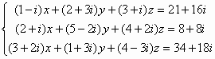

聯立三元一次方程(複數係數版本)
程式參考了網友roviury意見進行修改。
更新日期: 2010年4月22日
注意: 此程式雖可計算複數係(包括實係數)的聯立三元一次方程式，但會較其它實數版較多的限制條件，而且程式亦較長。若不用計算複數係數方程，請使用其它實數版本的程式。另外若果不需要記存答案，程式中綠色部份可以不輸入。
程式 (143 bytes 或 139 bytes)
程式需要在 CMPLX 模式下執行，因此在選擇新程式位置後，按 2 選用CMPLX模式。
?→A: ?→B: B┘A→C: ?→Y: Y┘A→D: ?→X: X┘A→M:
?→A: ?→B: 1┘(B - CA→B: ?→Y: B(DA - Y→Y: D + CY→D:
?→X: B(X - MA→X: CXM-: ?→A: ?→B: ?→C: A: ?→A:
(A - BX - AnsM)┘(C + BY - AnsD→C: M - DC→A◢ X + YC→B◢ C
例題1: 解聯立方程 :
按 Prog 1 再按 1 EXE 1 EXE 1 EXE 6 EXE 1 EXE -1 EXE 2 EXE 5 EXE
1 EXE 3 EXE 1 EXE 10 EXE (顯示X=1) EXE (顯示y=2) EXE (顯示z=3)
例題2: 解聯立方程 :

按 Prog 1 再按 1 - i EXE 2 + 3i EXE 3 + i EXE 21 + 16i EXE
2 + i EXE 5 - 2i EXE 4 + 2i EXE 8 + 8i EXE
3 + 2i EXE 1 + 3i EXE 4 - 3i EXE 34 + 18i EXE
( 此時計算機右上角出現R<=>I，表示為複數解)
(顯示X實數部為 1) Shift Re<=>Im (顯示X虛數部為 2i)
EXE (顯示y實數部為 2) Shift Re<=>Im (顯示y虛數部為 - 3i)
EXE (顯示z實數部為 3) Shift Re<=>Im (顯示z虛數部為 4i)
即 X=1+2i, y=2-3i, z=3+4i
註1: 若程式有綠色程式碼，執行完成後，按 RCL A 、RCL B及RCLC分別顯示x、y、z的值。
註2: 若方程組為 a1x + b1y + c1z = d1 , a2x + b2y + c2z = d2 , a3X + b3y + c3z = d3
解聯立三元一次方程的限制條件為: a1b2≠b1a2及a1≠0
若果出現Math error，代表方程組的行列式為零或違反限制條件。
返回 CASIO fx-50FH、fx-3650P II、fx-50FH II及fx-50F PLUS 程式集